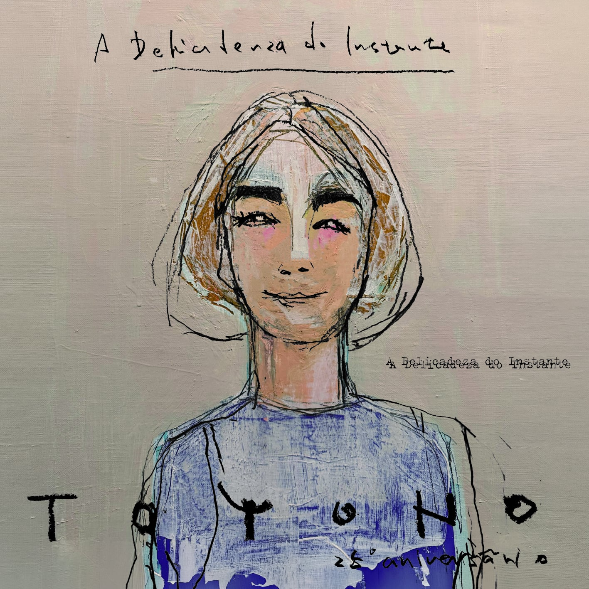

Album Overview
MPB黄金期を彷彿とさせるリオ制作による本場モダンブラジリアンサウンドと、TOYONOが誇るポルトガル語歌唱の艶やかな歌声と豊かなリズム感、日本語歌唱の繊細な美しさが極上の融合を果たした25周年アニバーサリー作品。先行7インチで話題を呼んだ「夢の続き」や、ホベルト・メネスカルがジャズギターで参加した「卒業写真」に加え、日本のブラジル音楽の聖地・青山プラッサオンゼの二代目オーナー浅田クラウヂアさんを偲ぶ「幾星霜」など、TOYONOだからこそ表現可能な日本ブラジルの絆をリアルに結ぶ全11曲を収録。洋楽・邦楽の枠を越えて幅広い音楽ファンにアピールできる7thオリジナルアルバム[cite: 15]。
01 Recommendations (推薦文)
沼澤尚 Takashi Numazawa (ドラマー)
一聴してその予想を遥かに上回る傑作が産まれていたことにそれはそれは嬉しい驚きでいっぱいになった。
プロデュースがギリェルミ・ジェ、スーパーバイザーがマルコス・スザーノ、さらにホベルト・メネスカルにレイラ・ピニェイロ、そしてそして我々が大好きなシンガーTOYONO...
このキャスティングを見ただけで、確実にルーツをベースにオーセンティック&コンテンポラリー、そして間違いなくハッピーなミクスチャーブラジルサウンドを想像しつつワクワクが止まらなかったが･･･一聴してその予想を遥かに上回る傑作が産まれていたことにそれはそれは嬉しい驚きでいっぱいになった。「今」こんなカッコいいサウンドを発信しているこのチームワークはひとえに一人一人のその愛に溢れた人間性の集まりがその要因であることは間違いない。つまり「人間性=音楽性」は音楽を表現する上で決して嘘をつけないからだ。
1970年代、中学生だった自分が初めてアントニオ・カルロス・ジョビン、ジョアン・ジルベルトを知ってからブラジル音楽をとどまることなく追いかけてきて、特に90年代当時世界を席巻していたMPBブームのあの素晴らしい時代のサウンドを彷彿とさせるのはもちろん、初めてブラジルサウンドに魅せられたセンセーションをも思い起こさせてくれる2026年リリースのこの傑作が世界中のより多くの人々に届きますように。 —— 沼澤尚 Takashi Numazawa (ドラマー)
マルコス・スザーノ Marcos Suzano (パーカッショニスト)
このアルバムは音楽という芸術の魅力が際立っており、TOYONOの歌声は清らかで澄み渡り実に心地よい場所に響いている。感情豊かな表現力で歌い上げられておりその多くがポルトガル語で歌われているが、これは日本人ヴォーカリストにとって間違いなく大きな挑戦であったはずだ。しかし、彼女は見事に歌い切っている!!!!
ギリェルミ・ジェがプロデュースしたTOYONOのアルバム 『A Delicadeza do Instante』は、本当に素晴らしい作品だ。丁寧に作り込まれたサウンドによってアルバム全曲通しての調和が見事で、ステレオタイプの”日本のシンガーが歌うブラジル音楽"という枠組みを完全に超越した、洗練された現代MPBの感覚がしっかり息づいた、力強いブラジリダーヂ溢れる作品に仕上がっている。歌詞も非常に素晴らしく、参加しているミュージシャンたちの演奏も極上だ。
選曲も秀逸で、オリジナル楽曲に加え、名曲「O Trem Azul」の非常に新しく新鮮なカバーも収録されており、実に素晴らしい仕上がりだ。僕もパーカッションでこのプロジェクトに参加し、コラボレーションできたことを本当に嬉しく思っている!!! 様々なシチュエーションで心地よく聴けるアルバムであり、誰もがこの作品を楽しんでくれると信じているし、心からそう願っている!!!
Parabéns, TOYONO! —— マルコス・スザーノ Marcos Suzano (パーカッショニスト)
02 プロデューサー Guilherme Gê ギレェルミ・ジェより ①
TOYONOと「A Delicadeza do Instante 瞬間の繊細さ」
TOYONOがポルトガル語で歌うのを聴くとき、そこには格別の魅力が宿っています。
『A Delicadeza do Instante』において、この日本人シンガーは単に外国のレパートリーをなぞるのではなく、異国の言語の中に自分ならではの歌声を見出した表現者として、ブラジルの楽曲へと向かい合っています。ここではポルトガル語は単なる歌詞を超え、彼女の芸術的アイデンティティそのものとなっています[cite: 16]。
これこそが、本作を象徴する最も大きな特徴と言えるでしょう。TOYONOは言葉の響きや母音、抑揚、そしてそれぞれのフレーズのメロディラインへ細やかに気を配りながら歌い上げていきます。ひとつひとつの言葉を丁寧に発音しながらも、日本人であることを無理に隠す様子はありません。むしろ逆で、日本人であることが隠されずに存在しているからこそ、彼女の歌唱は唯一無二の輝きを放つのです[cite: 16]。
彼女の歌声は繊細でありながら、凛とした芯の強さを感じさせます。過剰な演出でドラマティックに仕立てるのではなく、声の強弱や音色、言葉の端々に込める微細なニュアンスの積み重ねによって、密やかで濃密な空気感を生み出していく。表現を巧みにコントロールすることで、メロディ自体がのびのびと息づく豊かな余白が生み出されています[cite: 16]。
その結実として生まれたのが、いわば「第三の領域」です。それは単なる日本人が歌うブラジル音楽でもなければ、彼女をブラジル人歌手に仕立て上げる試みでもありません。「TOYONOというアーティストのありのまま」から紡ぎ出された、真のブラジル音楽なのです[cite: 16]。
03 プロデューサー Guilherme Gê ギレェルミ・ジェより ②
私と「A Delicadeza do Instante 瞬間の繊細さ」
『A Delicadeza do Instante』は、ブラジル音楽とTOYONOの持つ日本的な芸術的感性が出会うことで生まれたアルバムです[cite: 17]。
サウンドプロデューサー兼アーティスティック・ディレクターとしての私の役割は、歌い手としてのTOYONOの個性を引き立てるサウンド・アイデンティティを構築し、彼女の歌声とブラジル音楽のさまざまな要素との間に対話を成立させることでした[cite: 17]。
全9曲で構成されたこのアルバムには、レイラ・ピニェイロ、ホベルト・メネスカル、マルコス・スザーノ、カルロス・マルタ、クラウヂオ・インファンチ、マリオ・ファブリ、ハファエル・ペロといったブラジルの第一線で活躍するミュージシャンやアーティストが参加しています[cite: 17]。
全9曲中6曲が私の作曲によるもので、そのうちのいくつかはパウロ・セルジオ・ヴァーリやホベルト・メネスカルといった作曲家との共作です。また、ガブリエル・ジャックとの共作によるもう一つの楽曲は、TOYONOが歌うために特別に日本語のバージョンが作られました[cite: 17]。